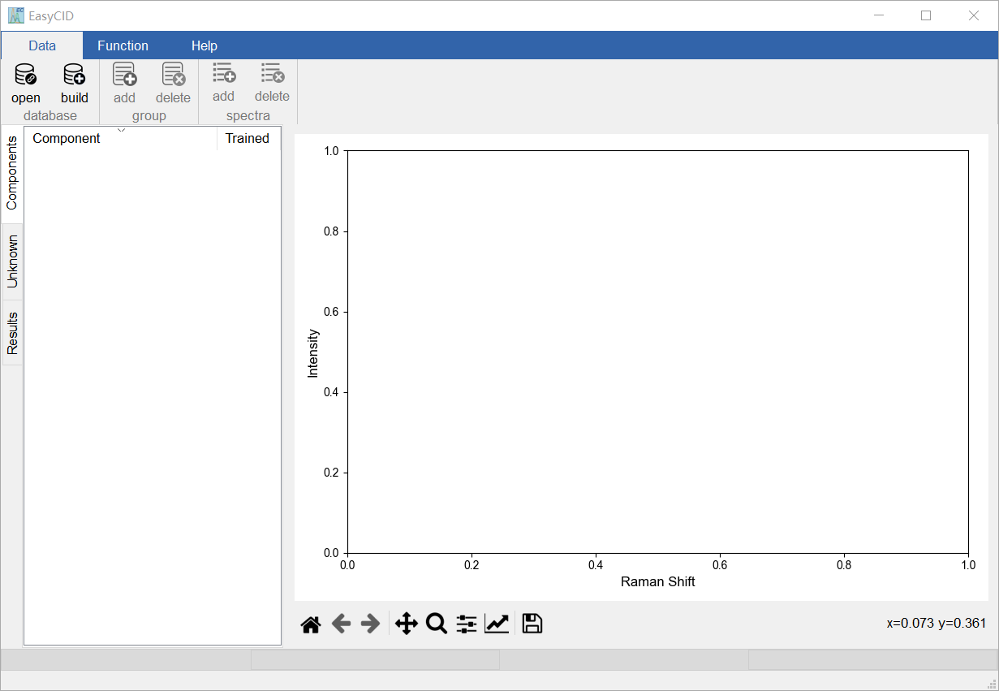
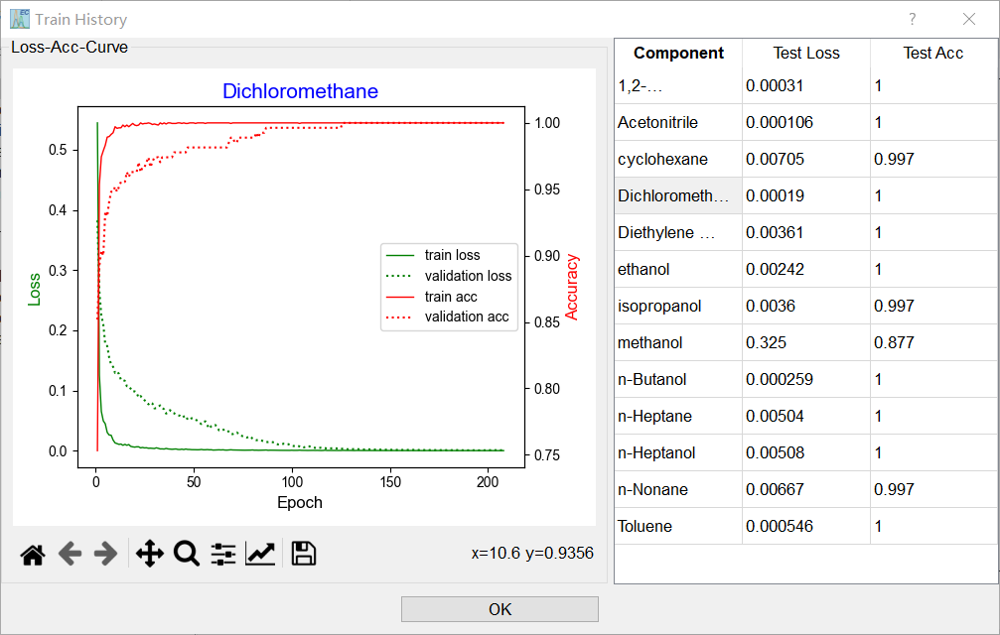
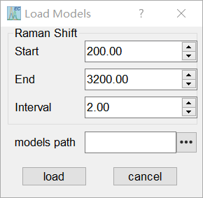

Quickly Start EasyCID
This sub-section delivers you a brief introduction on how to use EasyCID. If EasyCID has been installed following the previous sub-section, it can be started by double clicking its icon on the desktop or single clicking from the start-menu of windows operation system. The Main Window of EasyCID is shown below:
{kind=link}
build new database
EasyCID uses a local database based on sqlite to manage Raman spectral data. In order to set up a new database, please select Data/build in the menu of database. Then EasyCID will automatically link to the new database and give a tip message in the Main Window.

open database
If you already have a built database, In order to link to this database, please select Data/build in the menu of database. Note that only databases created through EasyCID can be successfully connected.
Import Spectra of pure components
To carry out the next modeling process, the spectra file of pure components should be imported into Database firstly. In order to import spectra, please select Data/add in the menu of group. All the spectra file formats that EasyCID supports as follows:
B&W Tek spectra files: pure text file which is proposed by B&W Tek Inc. for spectra storage and generated by BWSpec program.
CSV/TXT files: Simple text format with comma-separated values or character-separated values (CSV), each row represents a spectrum.
SPC files: SPC file format is a file format for storing and exchanging spectroscopic data, and it was invented by Galactic Industries.
JDX files: JDX file is a JCAMP-DX Format Data. JCAMP is an acronym derived from Joint Committee on Atomic and Molecular Physical Data. It is a binary, chemical spectroscopy format.
After the spectra file load into EasyCID, one can see the names of the spectra in the Main Window. The initial name of the corresponding group is similar as the format of “Models1”.

Double click on the name of component will plot its Raman spectrum on the right Plot Area.
Training the CNN models
To build CNN models for a specific task, one need to adjust the parameters of the modeling process. In order to build CNN models, please select the name of a Group or a spectrum, then click Function/start in the menu of training. The Training Parameters Window will subsequently pop up for adjusting the parameters used in training process.

The description of all adjustable parameters and the corresponding recommend values are shown as follows:
Name |
Description |
Recommend |
|
|---|---|---|---|
Data Augmentation |
number |
the number of the generated simulated spectra |
30000 |
noise rate |
control the noise level of the generated simulated spectra |
0.5% |
|
save path |
path for saving the augmented spectra. If empty, they are not saved |
||
Raman Shift |
start |
starting point of the analyzed Raman shift range |
|
end |
ending point of the analyzed Raman shift range |
||
interval |
sampling interval of the analyzed Raman shift |
||
Training Process |
optimizer |
minimize (or maximize) the loss function during the training procedure |
Adam |
learning rate |
control the adjust degree of the weights (and bias) of our network with respect the loss gradient. |
0.00001 |
|
batch size |
the number of samples used for one weights (and bias) update step |
512 |
|
epochs |
the number of times to train the entire sample set |
500 |
|
models path |
save path of the weights (and bias) of CNN models |
After setting all the parameters, the traning process will take place automatically and an progressBar of the training progress will appear in the Main Window. For better understand the concepts of parameters, please see Hyperparameters of CNN models. After the training process, a training report will given on Training Report Window.
{kind=link}
Load Models
if you already have some models trained in EasyCID, in order to load those models, please select the group name and click on Function/load in the menu of training.
{kind=link}
Then, Link Models Window will pop up. To successful link to the exist models, it is necessary to select the start, end and interval of the Raman shift corresponding to the models, and the storage folder for the models. Note that If the models is built by EasyCID and the file named ModelsInfo.json is in the storage folder, the start, end and interval of the Raman shift will aotumatically set.
Perform analysis
To Perform analysis of unknown samples is simple in EasyCID. Since the CNN models have already been build in previous steps, it only takes the next two steps: Firstly, load spectra of samples for prediction by selecting the menu item Function/open in prediction, and select the spectra to be analyzed.
{kind=link}
Double click on the name of mixture will plot its Raman spectrum on the right Plot Area.
Next, Clicking Function/start in the menu of prediction and then select the corrspound group and threshold in the pop-up Prediction Window.

After prediction, the results will shown in Main Window.

Check the checkbox can plot the Raman spectra of the mixture and the corresponding components on the right Plot Area.
Ratio Estimation
After obtaining the prediction results, the user can choose to perform further ratio estimation process. In order to perform ratio estimation process, please select Function/ratio in the menu of prediction. Then Ratio Estimation Window will pop up for adjusting the parameters of the used methods.

The description of all adjustable parameters and the corresponding recommend values are shown as follows:
Name |
Description |
Recommend |
|
|---|---|---|---|
AirPLS |
lambda |
the larger the lambda, the smoother the resulting background will be |
10 |
porder |
adaptive iteratively reweighted penalized least squares for baseline fitting |
1 |
|
max iter |
the maximum number of iterations |
100 |
|
Whittaker smoother |
lambda |
starting point of the analyzed Raman shift range |
1 |
Non-negative Elastic net |
L1 ratio |
adjust the proportion of L1 regularization in the overall penalty terms |
0.96 |
max iter |
the maximum number of iterations |
100 |
After setting all the parameters, the ratio estimation process will take place automatically and the ratio of each components will be shown in the Main Window at the end of the process. For better understand the concepts of parameters, please see Basic Concepts.
{kind=link}
Save Results
You could save the prediction results and the corresponding ratios in CSV format. To save them, please select Function/Save in prediction.